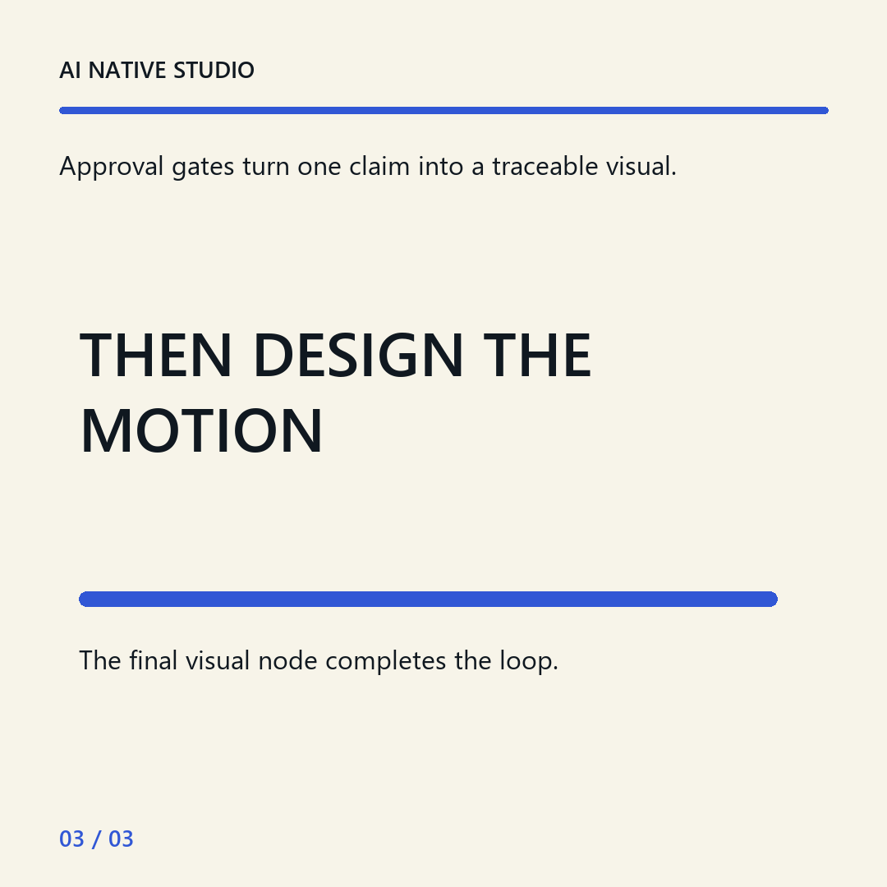

Source audit
Twenty synthetic demonstration posts are checked for coverage, dates, permalinks, and comparable metric windows.
An inspectable writing system
A local corpus audit becomes an editable voice guide. A sourced claim becomes an approved post. Only then does the post become motion.
THE GATE SEQUENCE
The workflow
The public view is precomputed. The real workflow runs privately and makes each approval explicit.
Twenty synthetic demonstration posts are checked for coverage, dates, permalinks, and comparable metric windows.
Observed patterns cite post IDs locally. Recommendations stay editable and distinct from evidence.
Three hooks lead to one sourced draft. The claim and the copy require separate approval.
A storyboard defines words, change, timing, and transition before a single frame is rendered.
The voice profile
These are approved derived rules. Historical excerpts are deliberately absent from this public export.
The approved pair

Before animation
Privacy boundary
What this demonstrates
Nothing was published automatically.